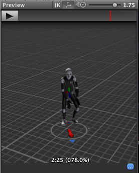

Target Matching
Often in games, a situation arises where a character must move in such a way that a hand or foot lands at a certain place at a certain time. For example, the character may need to jump across stepping stones or jump and grab an overhead beam.
You can use the Animator.MatchTarget function to handle this kind of situation. Imagine, for example, you want to arrange an situation where the character jumps onto a platform and you already have an animation clip for it called Jump Up. Firstly, you need to find the place in the animation clip at which the character is beginning to get off the ground, note in this case it is 14.1% or 0.141 into the animation clip in normalized time:-

You also need to find the place in the animation clip where the character is about to land on its feet, which in this case is at 78.0% or 0.78.

With this information, you can create a script that calls MatchTarget which you can attach to the model:-
using UnityEngine;
using System;
[RequireComponent(typeof(Animator))]
public class TargetCtrl : MonoBehaviour {
protected Animator animator;
//the platform object in the scene
public Transform jumpTarget = null;
void Start () {
animator = GetComponent<Animator>();
}
void Update () {
if(animator) {
if(Input.GetButton("Fire1"))
animator.MatchTarget(jumpTarget.position, jumpTarget.rotation, AvatarTarget.LeftFoot,
new MatchTargetWeightMask(Vector3.one, 1f), 0.141f, 0.78f);
}
}
}
The script will move the character so that it jumps from its current position and lands with its left foot at the target. Bear in mind that the result of using MatchTarget will generally only make sense if it is called at the right point in gameplay.